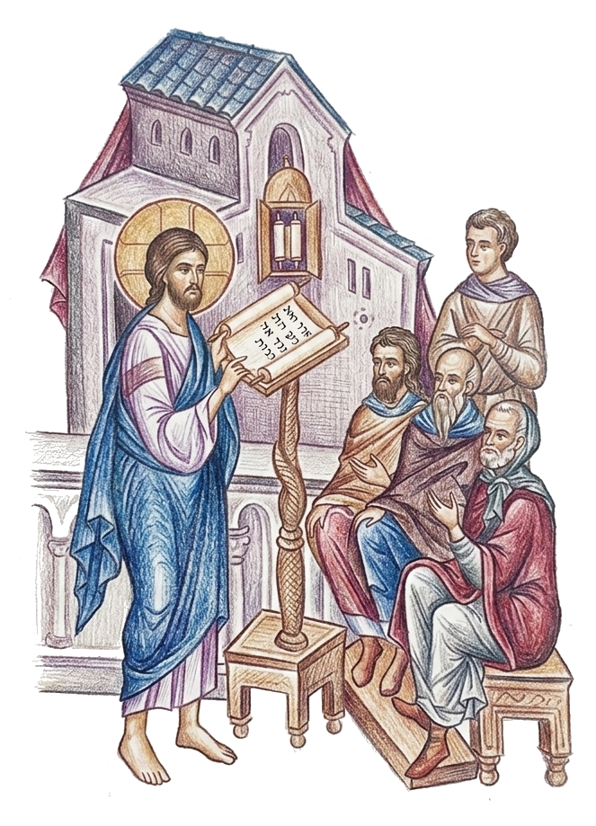
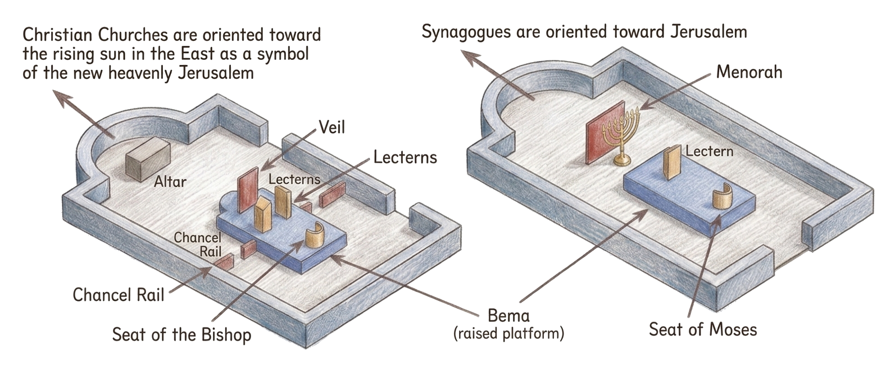
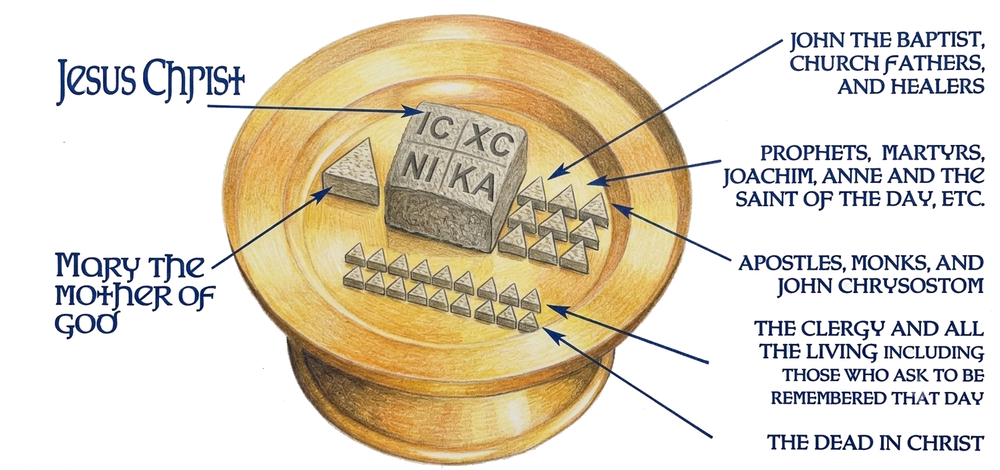
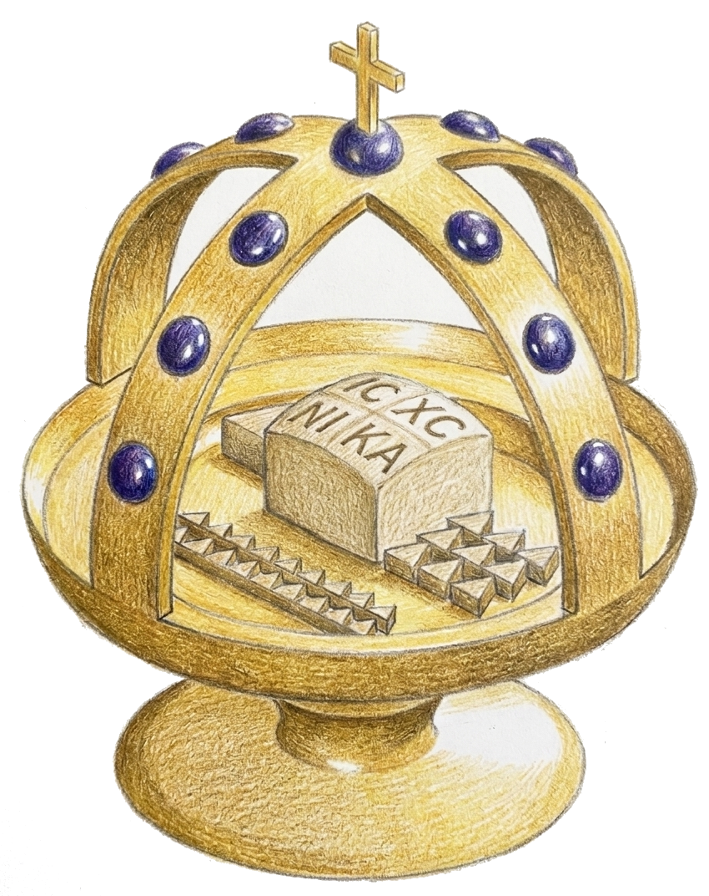
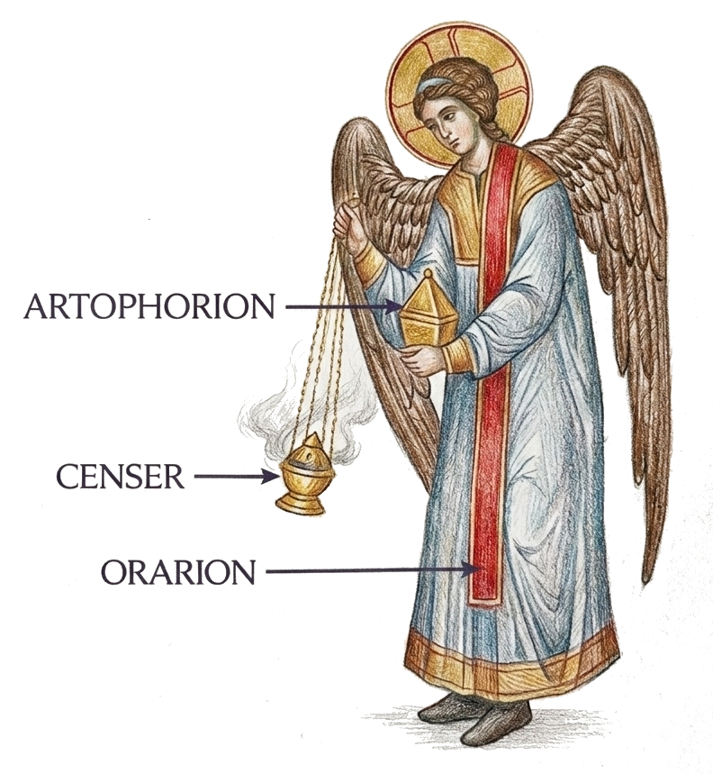

This table is the sinews of our soul, the bond of our mind, the foundation of our confidence, our hope, our salvation, our light, our life.
— St John Chrysostom
into the eucharistic life of Christ. And we do it in remembrance of Him because, as we offer again and again our life and our world to God, we discover each time that there is nothing else to be offered but Christ Himself—the Life of the world, the fullness of all that exists. It is His Eucharist, and He is the Eucharist. We are included in the Eucharist of Christ and Christ is our Eucharist.
Therefore we can say that “the Liturgy is an ever-repeating experience by the people of God of the love of God and the reality of salvation” and that “in it the mystery of the salvation of the world by Christ is revealed and granted to us.”
… If one died for all, then all died; and He died for all, that those who live should live no longer for themselves, but for Him who died for them and rose again
II Corinthians 5.14–15

History of the Divine Liturgy
When and Where Did the Divine Liturgy Originate?

The first Christians were Jews. They did not see their faith in Christ as a new religion but as the realization of all their hopes and the fulfillment of their sacred writings, the Old Testament. They saw no break with the past but understood that all their “former” beliefs and religious practices were not abolished but rather made new in Christ, as Jesus Himself said, “I did not come to destroy but to fulfill.” (St Matthew 5.17) Scripture shows that the first Christians kept Jewish religious practices including the daily prayer cycle (Acts 3.1), the temple worship (Acts 2.46), and the yearly cycle of at least some of the feasts such as the Passover and Pentecost (Acts 20.16) which now had received their full meaning in Christ.
One of the most vital aspects of first-century Judaism was the liturgical synagogue worship in which Christ Himself regularly participated (St Luke 4.16). The service consisted of a series of prayers followed by the confession, Scripture readings, a sermon, and the benediction. Even after they were no longer able to attend the synagogue and Temple services because of persecutions (Acts chapters 6, 7, 21), the earliest Christians continued worshiping in the same manner as they always had done in the synagogues. These worship services with Scripture reading and instruction became known as the Synaxis or the Meeting.

In addition to the Synaxis, Christians also gathered on Sundays, the day of the resurrection of Christ, the Lord’s Day, for a fellowship meal ending in the Eucharist, offering thanksgiving for all they had received in Christ. Jesus had instituted this celebration on “the same night in which He was betrayed” (1 Corinthians 11.23), but like the Synaxis it also was based on Jewish traditions. The Jewish Passover supper, the Kiddush, and the Birkat-ha-mazon (the Prayer of Thanksgiving) which climaxed every solemn communal meal were central in the development of the Eucharist celebration.
By around 70 AD, when non-Jews became dominant in the Church, the form of worship based on the synagogue was already established among both Jewish and Gentile Christians. In fact, “the Eucharist had already been at the heart of the religion of Christians for twenty years before the first of the New Testament documents was written.”
For the first centuries, two distinct components of Christian worship were celebrated, the Synaxis and the Eucharist.
While everyone was invited to the Synaxis, particularly the catechumens (those preparing for baptism), only baptized Christians attended the Eucharist. At first these services could be held separately, but between the third and the sixth centuries it became normal to hold them together. The combined liturgical service would begin with the Synaxis, which became known as the Liturgy of the Catechumens or the Liturgy of the Word since it focused on instruction from the Word of God. After the dismissal of the catechumens, the Eucharist was celebrated. This part of the liturgy became known also as the Liturgy of the Faithful.
This combined liturgy was celebrated on Sundays, but in recognition of the Sabbath, it was celebrated also on Saturdays, particularly in the east. In certain places it was observed also on fasting days (Wednesdays and Fridays). From the beginning, fasting was connected with the Eucharist, not so much as an ascetical act, but rather as a celebration of the believers’ present position in the Kingdom of God above the world of natural needs and desires.1
Just as the liturgy finds its source in first-century Judaism, early Christian places of worship also were patterned on synagogues. Even before the end of the persecutions early in the fourth century, there were places where Christians were able to build or remodel buildings to house their growing congregations during periodic times of peace. The earliest preserved churches demonstrate that they were Christianized versions of Jewish synagogues complete with representations of the Ark of the Covenant, where the Scriptures were kept, and the Seat of Moses (St Matthew. 23.2), which for the Christians became the seat of the bishop. Even the iconographic decoration of these early Christian churches, which became the source of Byzantine and Orthodox church decoration, was a direct copy of the decoration of synagogues, except that Christians also included New Testament scenes.
The followers of Christ did make two important modifications. First, synagogues were oriented toward the Holy of Holies in the Jerusalem Temple where God had met His people. (Exodus 25.22) However, the early Christians understood that God, in Christ, was always present with them wherever

- “Fasting was the ‘station’ of the Church herself, the people of God standing in readiness, awaiting the Parousia of the Lord. The emphasis here was not on the ascetical value of fasting but on the expression – in the refusal of food, the denial of one’s subjection to natural necessity – of that same eschatological character of the church herself and her faith....Hence the correlation between fasting and Communion as between waiting for and being fulfilled by and receiving the food and drink of the Kingdom.” Fr Alexander Schmemann, Introduction to Liturgical Theology, Asheleigh E. Moorehouse, tr. (Crestwood, N.Y.: St Vladimir’s Press, 1996), 157–158.
“two or three are gathered together” in His name. (St Matthew 18.20) Also, Jesus taught that it is not physical location which validates worship but rather that worship is done “in spirit and truth.” (St John 4.20-24) Christians, therefore, oriented their churches and their prayers not toward Jerusalem but toward the rising sun in the east. In Malachi, God promised that “The Sun of Righteousness shall arise with healing in His wings,” (Malachi 4.2) which was understood as a prophesy of the second coming of Christ. Jerusalem had lost its significance, but Christians eagerly looked for the new heavenly Jerusalem where they would be forever with Christ in His kingdom. (Revelation 21) The rising sun became “the only fitting symbol” for the return of Christ and for His kingdom which is and is to come. Therefore, by facing east, Christians since the first century have expressed their hope in their Savior’s return and their entrance into the kingdom of God.
Near the eastern wall of their places of worship, the early Christians also added a table, the Altar, where the Eucharist was celebrated. When the prayers and Scripture readings had been completed in the center of the church, the clergy would take the offerings of bread and the wine and together with the whole congregation walk to the table in the east thereby representing their entrance into the kingdom of God. At the table they would take communion and in so doing would joyously enter the presence of Christ in His kingdom and receive Him into their body.2
From the beginning to the present, the Divine Liturgy has undergone various developments and enrichments due to changing historical conditions. New layers of meaning and ceremony were added, but the core of the structure and its significance have never changed. The Eucharist celebration remains as always, “the entrance of the Church into the joy of its Lord.”
- It is not clear from ancient sources where women were allowed to stand in the Jewish synagogues. In early and even medieval Christian churches, however, it is known that during the first part of the Liturgy when the Scriptures were read and taught from the bema (the raised speaking platform in the center of the church) the men stood to the east in front of the bema and the women to the west behind the bema. However, when the time came in the service for the offering and communion, the women joined the men in the eastern part of the church around the altar. See Louis Bouyer, Liturgy and Architecture, pp. 36–39.
The Rite of Preparation
Originally the Rite of Preparation, the Proskomidia, was an integral part of the Eucharist celebration, but today, unless the bishop is celebrating, it is performed alone by the clergy before the beginning of the public service of the Divine Liturgy. In this rite, the priest and deacon prepare themselves and the bread and wine for the Eucharist.
First century Christians…usually brought to the Liturgy a gift of bread and wine from their homes with the request to be remembered during the service. The church official would pray over the gifts asking that God would bless them and would accept the gifts as a sacrifice. The official would also pray that the Lord would remember those who brought the gifts and those for whom the gifts were brought. A deacon would read aloud their names. From among these gifts, one or more loaves of bread and a portion of wine would be selected which the official would prepare for use in the Eucharist. The remaining gifts were used to sustain the clergy, the poor, widows, and orphans. The gifts were also used for the fellowship meal (the agape) which was held after the Liturgy.
Today the Preparation begins with the priest and deacon offering praise to God and asking for mercy and forgiveness for themselves in front of the iconostasis. They pray before the icon of Christ and the icon of the Mother of God. Then they enter the sanctuary and bow before the Altar and kiss the Gospels and the Altar.

Next, the priest and deacon ceremoniously put on their vestments* while praying specific prayers for each garment. In the early church the clergy wore no specific vestments, but over the centuries their clothing, almost all of which were adaptations of everyday apparel, came to have deeply symbolic meaning. The priest wears a tunic (sticharion) representing purity of conscience and life given by the Holy Spirit, a stole (epitrachelion) worn around the neck representing putting on the yoke of Christ and willingness to suffer, a belt (zone) representing readiness for spiritual combat, cuffs (epimanikia) for the strength and power of God, and a cloak (phelanion) for spiritual readiness. The epigonation (palista or sword) is a square cloth hanging at the right thigh representing the Sword of the Spirit, the Word of God. The deacon wears a tunic similar to the priest except the deacon’s sleeves are wide and a narrow stole (orarion – or orar) over his shoulder representing the deacon’s readiness to serve.
After vesting*, the deacon sets up the items necessary to prepare the bread and wine on the table of the Prothesis to the north of the Altar. The priest blesses the bread, the prosphora (meaning “offering”) and cuts out the center containing the insignia of Christ – IC XC NI KA (Jesus Christ the Victor). This symbolizes the taking of the Body of Christ out from the body of the Virgin Mary. With each cut he prays special prayers recalling Christ’s sacrifice and then he places the center of the prosphora on the diskos (the plate). The deacon then pours wine and a little water into the cup (the chalice) recalling the blood and water that flowed from Christ’s side. The priest then takes other pieces of bread and places them on the diskos. These pieces represent all the members of the Church, including the members of the local congregation.

It is the whole Church, the entire Body of Christ, which is represented on the diskos and is offered to God in the Eucharist, but it is only that of Christ which is consumed in communion.

The diskos is then covered with an asteriskos which resembles a star recalling the star of Bethlehem and then with a veil (aer) acknowledging that the Lord has covered Himself with glory and power. The priest censes the covered gifts and prays that they would be acceptable to God. The deacon then censes the offerings, the table, and the whole church as the people arrive for the beginning of the Divine Liturgy.
Since the Proskomidia is the preparation for the Liturgy, the Church (beginning around the 6th century) connected it with the early years of Christ’s life on earth, which were years of preparation for His later work. Commentators on the Liturgy saw parallels between the Proskomidia which is done in the altar area behind closed doors and curtains – unseen by the public – and Christ’s early years which were hidden from the general public.
Censing
This rite, which existed in the Temple of Jerusalem, was first opposed by Christians because of its pagan connotations (the Christians were persecuted by the Roman Empire for not burning incense before the image of the Emperor, thus denying His divinity), but later accepted by the Church. It is a natural symbol of religion: of its transforming power (incense becoming fragrance) and adoration (smoke going upwards). In Christian worship censing is prescribed either as an act of preparation and sanctification (censing the Altar before the offertory) or as an expression of sacred respect (censing of icons and of the congregation: recognizing in each man the image of God and the high calling towards holiness).

An angel clothed as a deacon
In the early church the ministry of deacons was compared to that of angels since both were to serve both God and the Church. Very early the deacon’s orarion (the narrow stole over his left shoulder) was compared to the wings of angels. Besides the censer, this angel / deacon also holds an artophorion which was a small container used to keep pieces of the Eucharist Bread to later distribute to the sick and infirmed unable to attend the Liturgy. This distribution was part of the role of deacons. See Acts 6.1-6
What Is the Divine Liturgy?
Not even the most precise description of the Liturgy can fully explain the inner, spiritual essence of the Eucharist. It is the central point to which the whole Christian life moves and about which it revolves. It is the heart of the whole life of the Church, the means and the expression of her unity with Christ.
From the beginning mankind was intended to be in constant communion with God. The joyous, life-giving relationship between God and man was continually renewed by man offering thanksgiving to His Creator for His gift of everything necessary for life. This transformed sacramentalized the simple act of living and eating into communion with God. The cycle of communion—of receiving life, offering thanks, and again receiving—was broken by sin when man saw God’s gifts not as means of communion but as ends unto themselves and there for his own pleasure and use without reference to God. Mankind became lost, separated from God. Life became futile, without purpose. Death reigned when man lost his life of eucharistic communion with God. (Eucharist is simply the Greek word for thanksgiving.) God, however, deeply loved mankind and did not leave His creation alienated from Him. God interceded on man’s behalf and became the perfect man in Christ. As a man, God, in Jesus Christ, did what no other man did or could do: He fully offered Himself and all of creation to God. In His life and in His death Jesus offered to God all life and everything that exists.
“In Him was life” St John 1.4
“In Him all things consist.” Colossians 1.17
In the Eucharist celebration when we offer up to God bread and wine representing the gifts He has given us to maintain life “we offer the world and ourselves to God. But we do it in Christ and in remembrance of Him. We do it in Christ because He has already offered all that is to be offered to God. He has performed once and for all this Eucharist, and nothing has been left unoffered. In Him was Life—and this life of all of us, He gave to God. The Church is all those who have been accepted